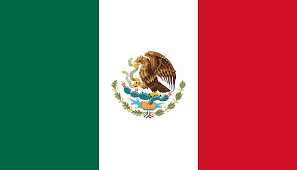

Mexico

México, ubicado en América del Norte, es un país de vasta riqueza cultural y biodiversidad. Con una población de más de 120 millones de habitantes, su capital es la Ciudad de México. El español es el idioma oficial, aunque hay una diversidad de lenguas indígenas reconocidas. La gastronomía mexicana es famosa por su variedad y sabor, incluyendo platillos como tacos, mole y chiles en nogada. La economía mexicana es diversificada, con sectores como la industria manufacturera, la agricultura y el turismo. El país es conocido por sus impresionantes sitios arqueológicos, playas y ciudades coloniales. Además, México alberga una gran biodiversidad, siendo hogar de especies emblemáticas y numerosas áreas protegidas.